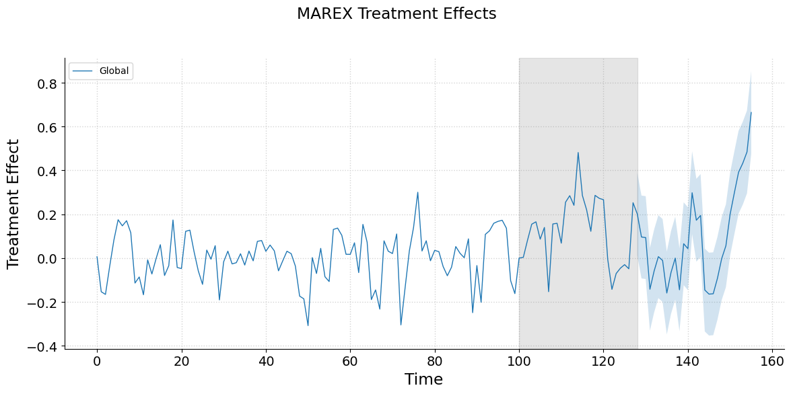

/opt/hostedtoolcache/Python/3.13.7/x64/lib/python3.13/site-packages/mlsynth/config_models.py:121: UserWarning:
DataFrame was not sorted by [town, time] — auto-sorting applied.

Suppose the government of Curaçao wishes to implement a new “Green Stay” initiative that encourages hotels to adopt sustainability measures such as reducing water usage, improving waste management, and shifting toward renewable energy. From a methodological standpoint, the most rigorous way to measure the impact of such a program would be through a randomized controlled trial, where some neighborhoods are randomly assigned to implement the policy while others serve as controls. Randomization ensures that, in expectation, treated and control groups are balanced, and that differences in outcomes can be attributed to the policy. It also provides a clear framework for statistical inference and lends credibility to the findings.
Despite these advantages, there are serious obstacles to conducting a true RCT in this context. Ethically, assigning certain neighborhoods to receive the benefits while denying them to others may be perceived as unfair, particularly if the policy boosts reputation, attracts eco-conscious travelers, or leads to financial advantages. Guests might also experience different standards unknowingly, raising questions about fairness and transparency.
Politically, implementing randomization across hundreds of neighborhoods would require coordination among the government, hotel associations, and local businesses, all of whom may resist being “experimented on.” Because tourism is central to the island’s economy, public perception would be sensitive, and randomized assignment could easily be framed as a risk to one of Curaçao’s most important industries.
The logistical burden is equally daunting: monitoring and enforcing different sustainability requirements neighborhood by neighborhood would be complex and costly, with significant overhead required for compliance and enforcement. In practice, coordinating hundreds of independent hotels is unlikely to succeed. In other words, while an RCT is desirable in theory, ethical, political, and feasibility barriers make it impractical in the context of Curaçao’s hotel sector.
Given these challenges, a more practical approach is to consider the market at a localized level, grouping neighborhoods into clusters that share similar characteristics, such as geographic location, customer demographics, or historical patterns of tourist activity. By focusing on clusters rather than individual units, we mitigate ethical concerns of treating some neighborhoods differently than others, since selection occurs within naturally similar groups rather than arbitrarily across the whole market.
Cluster analysis also reduces logistical complexity, because interventions can be coordinated at the cluster level rather than needing to monitor and enforce policies across hundreds of disparate hotels. Within each cluster, we can select treated neighborhoods that closely resemble the local market and control neighborhoods that reflect the cluster’s underlying dynamics. This ensures that observed effects of the intervention are not driven by unusual outliers or idiosyncratic behaviors, but rather capture the typical response within a given market segment.
But how would we select which neighborhoods to treat and which to use as controls? Even within a single cluster, we cannot treat everybody for practical reasons. To address this, we can use synthetic control methods, which construct “synthetic neighborhoods” that mimic the characteristics of treated clusters, allowing analysts to experiment with different treatment assignments and evaluate their likely impact rigorously.
In our Curaçao Green Stay example, the unit of treatment is the neighborhood, not individual hotels. That is, entire neighborhoods may adopt sustainability measures, while others remain untreated. Let \(\mathcal{J} = \{1, \dots, J\}\) denote neighborhoods observed over \(T_0\) pre-treatment periods \(\mathcal{T}_0 = \{1, \dots, T_0\}\), nested within \(K\) clusters \(\mathcal{K} = \{1, \dots, K\}\) that group neighborhoods with similar characteristics (e.g., location, tourist demographics, historical occupancy). Let \(I_k \subseteq \mathcal{J}\) denote neighborhoods in cluster \(k\), with \(j \in I_{k(j)}\) indicating cluster membership. In our case, we have 21 units of interest, where some will be treated and others will not. We have 128 pre-treatment periods, and 28 post periods. Observed outcomes, like occupancy rates or energy use, are collected in \(\mathbf{Y} \in \mathbb{R}^{J \times T_0}\), with \(y_{jt}\) representing the outcome for neighborhood \(j\) at time \(t\). Potential outcomes are \(y_{jt}^I\) if the neighborhood participates in Green Stay and \(y_{jt}^N\) if not. The cluster-weighted average treatment effect is
\[ \tau_t = \sum_{j=1}^J f_j \, (y_{jt}^I - y_{jt}^N), \quad t > T_0, \]
where \(f_j \ge 0\) and \(\sum_{j=1}^J f_j = 1\). Predictor vectors \(\mathbf{x}_j \in \mathbb{R}^r\) capture pre-treatment characteristics of neighborhoods, such as the average energy use, hotel occupancy, or typical guest demographics, with cluster mean
\[ \mathbf{\bar{x}}_k = \frac{\sum_{j \in I_k} f_j \mathbf{x}_j}{\sum_{j \in I_k} f_j}. \]
Distances are defined as
\[ D_{1,j,k} = \|\mathbf{x}_j - \mathbf{\bar{x}}_k\|_2^2, \quad D_{2,j,j',k} = \|\mathbf{x}_j - \mathbf{x}_{j'}\|_2^2. \]
We define synthetic treated and control neighborhoods via weights \(w_j \ge 0\) and \(v_{i,j} \ge 0\), and neighborhoods are either treated or not via \(z_j \in \{0,1\}\). Optional costs \(\mathbf{c}\) and cluster budgets \(B_k\) constrain feasible assignments. The feasible set is
\[ \begin{aligned} \mathcal{F} = \Big\{ (w,v) \,\Big| \; & w_j, v_j \ge 0, \quad \sum_{j \in I_k} w_j = \sum_{j \in I_k} v_j = 1, \\ & w_j \le z_j, \; v_j \le 1 - z_j, \quad \sum_{j \in I_k} z_j \in [m_{\text{min},k}, m_{\text{max},k}], \\ & \sum_{j \in I_k} c_j w_j \le B_k, \quad \sum_{k=1}^K \sum_{j \in I_k} c_j w_j \le B_{\text{total}}, \\ & \sum_{k=1}^K z_{j,k} \le 1 \Big\}. \end{aligned} \]
Intuitively, in the Curaçao context:
Non-negativity and normalization (\(w_j, v_j \ge 0\), \(\sum w_j = \sum v_j = 1\)):
Synthetic neighborhoods are weighted averages of real neighborhoods. Negative weights would imply “subtracting” a neighborhood’s influence. Summing to one ensures each synthetic neighborhood is a proper mixture of real neighborhoods.
Treatment assignment (\(z_j \in \{0,1\}, w_j \le z_j, v_j \le 1 - z_j\)):
Each neighborhood is either treated or not. A treated neighborhood contributes to the synthetic treated unit but not the control unit, and vice versa, avoiding “double-counting.”
Cardinality constraints (\(\sum z_j \in [m_{\text{min},k}, m_{\text{max},k}]\)):
Ensures at least one neighborhood is treated per cluster to observe effects, but not every neighborhood, respecting ethical, financial, or logistical limits.
Budget constraints (\(\sum c_j w_j \le B_k\), \(\sum c_j w_j \le B_{\text{total}}\)):
Neighborhoods may have different costs. Cluster- and global-level budgets ensure the program remains financially feasible.
Cluster exclusivity (\(\sum_k z_{j,k} \le 1\)):
Each neighborhood can only be treated in one cluster to avoid overlapping treatments that could confound the effect.
The clustered synthetic control estimator is obtained by solving
\[ \min_{(\mathbf{w},\mathbf{v}) \in \mathcal{F}} \; \mathcal{L}(\mathbf{w},\mathbf{v}), \]
where \(\mathcal{F}\) is the feasible set defined by nonnegativity, within–cluster normalization, exclusivity, and any budget constraints. Each cluster \(k \in \{1,\dots,K\}\) has member indices \(I_k\), cluster mean \(\mathbf{\bar{x}}_k\), and outcomes \(\mathbf{X}_{I_k}\).
The optimization problem chooses synthetic treated and control neighborhoods by minimizing a loss function subject to feasibility constraints. At its core, the method constructs weighted averages of units to be treated and untreated, such that both averages resemble the cluster as a whole and each other.
The base estimator is the most straightforward. For each cluster \(k\), it tries to make the synthetic treated and synthetic control neighborhoods look like the cluster mean:
\[ \mathcal{L}_{\text{Base}}(\mathbf{w},\mathbf{v}) = \sum_{k=1}^K \Big( \mathbf{f}_{I_k}^\top \mathbf{1} \Big) \Big[ \|\bar{\mathbf{x}}_k - \mathbf{X}_{I_k}^\top \mathbf{w}_{I_k}\|_2^2 + \|\bar{\mathbf{x}}_k - \mathbf{X}_{I_k}^\top \mathbf{v}_{I_k}\|_2^2 \Big]. \]
This guarantees that both sides of the experiment are anchored to the same benchmark—the average of their cluster.
The weakly penalized version extends this idea by also encouraging the treated and control groups to resemble each other directly:
\[ \mathcal{L}_{\text{Weak}}(\mathbf{w},\mathbf{v}) = \mathcal{L}_{\text{Base}}(\mathbf{w},\mathbf{v}) + \beta \|\mathbf{X}_{I_k}^\top \mathbf{w}_{I_k} - \mathbf{X}_{I_k}^\top \mathbf{v}_{I_k}\|_2^2. \]
In practice, this prevents the optimization from drifting toward two very different synthetic groups that both happen to match the cluster mean.
The penalized estimator takes things further by adding distance-based penalties. These ensure that the selected neighborhoods are not only good statistical matches but also geographically or demographically close to the cluster mean:
\[ \mathcal{L}_{\text{Penalized}}(\mathbf{w},\mathbf{v}) = \mathcal{L}_{\text{Base}}(\mathbf{w},\mathbf{v}) + \lambda_1 \mathbf{w}_{I_k}^\top D_{1,k} \mathbf{w}_{I_k} + \lambda_2 \mathbf{v}_{I_k}^\top D_{1,k} \mathbf{v}_{I_k}. \]
Here, the matrices \(D_{1,k}\) encode distances, so neighborhoods that are far from the cluster center are penalized more heavily.
Finally, the unit-level estimator introduces the most granular controls. It not only enforces closeness to cluster means but also requires that each treated neighborhood has a tight match with its synthetic control, and that pairs of neighborhoods within the cluster do not diverge too much:
\[ \mathcal{L}_{\text{Unit}}(\mathbf{w},\mathbf{v}) = \mathcal{L}_{\text{Base}}(\mathbf{w},\mathbf{v}) + \xi \, \big(\mathbf{w}_{I_k}^\top \, \mathrm{diag}(\|\mathbf{X}_{I_k} - \mathbf{X}_{I_k} \mathbf{V}_k\|_F^2)\big) + \lambda_{2,\text{unit}} \, \mathrm{tr}(\mathbf{W}_{I_k}^\top D_{2,k} \mathbf{V}_{I_k}). \]
This is the most restrictive design. It is best suited for cases where heterogeneity across neighborhoods matters, and analysts want each treated area to have a carefully matched control counterpart.
Together, these estimators form a hierarchy. The base version establishes a simple anchor; the weak estimator prevents divergence; the penalized estimator incorporates geographic or demographic realism; and the unit-level estimator enforces fine-grained one-to-one balance. Analysts can experiment across this ladder, choosing the design that best matches the goals and constraints of their study.
What’s particularly interesting about this setup is that we’re not necessarily estimating treatment effects yet. Instead, the synthetic control framework is acting as a decision-making tool: it tells us which neighborhoods to treat and why, based on the trade-offs encoded in the objective function. Analysts can tweak the penalties, change clustering schemes, or adjust budget and cardinality constraints to see how the proposed treatment assignments change.
For example, increasing \(\beta\) encourages the treated neighborhoods to be closer to the synthetic controls, effectively prioritizing representativeness of the treated units. Adjusting \(\lambda_1\) and \(\lambda_2\) emphasizes fidelity to cluster averages, penalizing outlier neighborhoods from being selected. Unit-level penalties \(\xi\) and \(\lambda_{2,j}\) allow analysts to ensure micro-level balance, focusing on individual neighborhoods with unique characteristics.
Because the framework is fully flexible, it becomes a sandbox for experimental design: you can simulate different cost and budget allocations, understand which neighborhoods are likely to be chosen under various priorities, and make informed decisions before the business/government does any treatment. In other words, this lets analysts answer: “Given our objectives and constraints, which neighborhoods should be treated, and why?” before any policy is implemented, making the framework extremely valuable for planning ethical, practical, and representative market experiments.
To illustrate, suppose we have 128 pre-treatment periods across two clusters of neighborhoods in Curaçao. The non-Willemstad cluster includes Barber, Lagún, Oostpunt, Santa Rosa, Sint Willibrordus, Soto, Spaanse Water, Tera Corá, and Westpunt. The plot below gives our results from the sythethic experiment.
/opt/hostedtoolcache/Python/3.13.7/x64/lib/python3.13/site-packages/mlsynth/config_models.py:121: UserWarning:
DataFrame was not sorted by [town, time] — auto-sorting applied.
We see that the above gives good pretreatment fit. Now I solve with a quadratic relaxation of the above objective, where we get
/opt/hostedtoolcache/Python/3.13.7/x64/lib/python3.13/site-packages/mlsynth/config_models.py:121: UserWarning:
DataFrame was not sorted by [town, time] — auto-sorting applied.

We see that even when I solve the QP instead of the MIQP version from above, we still obtain good pre-treatment fit with respect to the synthetic control. This suggests that the controls and treated units are representative of their broader markets.
Notice here how I have not at all discussed the ATT/ATE yet. Or, the uncertainty underlying the estimated treatment effect. This is because again, the framework laid out above is for the designing of experiments. We can do other things too.
/opt/hostedtoolcache/Python/3.13.7/x64/lib/python3.13/site-packages/mlsynth/config_models.py:121: UserWarning:
DataFrame was not sorted by [town, time] — auto-sorting applied.

Finally, I experimented with relaxing the two-cluster assumption altogether by treating the island as one aggregate market. Using the penalized design, I allowed anywhere from 2 to 5 neighborhoods to be treated, and even extended the upper bound of treated units to 12. In every case, the estimator identified coherent sets of treated and control units that aligned well with the historical data. The specific neighborhoods chosen shifted depending on the cardinality constraint, but the resulting synthetic controls continued to provide strong pre-treatment alignment. What this shows is that the synthetic design is not overly fragile: whether we divide Curaçao into clusters or treat it as one unit, whether we enforce integer treatment assignments or relax them, the method produces stable synthetic matches. That stability is exactly what makes the framework useful as a design tool. Before we ever estimate treatment effects or report uncertainty, we can be confident that the experimental design itself—who is treated, who is not, and why.
Another point of contrast is worth making in comparison to the randomized controlled trial setup. In a traditional RCT, the randomization happens once in the field. After we randomize and assign treatment, there is no undo button. Once units are assigned to treatment or control, the study must run its course, with all the costs, risks, and constraints that entails. By contrast, the exprimental synthetic control design can be run as many times as we like on a laptop in a few minutes. We can explore different clustering assumptions, penalties, cost constraints, and/or solver formulations, and see how stable the resulting design looks before ever committing any resources. Crucially, synthetic controls can, in the setting where only a few markets may be treated, achieve RCT-like balance even when only a few units are treated. If treating additional units is costly—as it almost always is—being able to restrict treatment to just two or three units while still maintaining valid comparisons can represent a massive savings in resources. Instead of rolling out an intervention to half the sample (say, ten out of twenty-one units), we can strategically treat only a handful while preserving the benefits of a balanced control group.
That flexibility makes the method powerful as a planning tool. It gives researchers and practitioners a way to prototype experiments cheaply and safely, identifying whether the data support a credible design before taking any real-world action. Large-scale RCTs will always have their place as the gold standard, but they are expensive and logistically demanding. Synthetic design exercises like the one above open the door to a more iterative, exploratory phase of experimental planning—something we can do in advance, at low cost, to ensure that when we do invest in a full study, it is targeted, efficient, and built on a solid foundation.
Let \(\mathcal{J} = \{1, \dots, J\}\) denote neighborhoods and \(\mathcal{K} = \{1, \dots, K\}\) denote clusters. Each cluster \(k\) contains neighborhoods \(I_k \subseteq \mathcal{J}\). Let \(T_0\) be the number of pre-treatment periods and \(T_{\text{post}}\) the number of post-treatment periods. Observed outcomes are \(y_{jt}\), with synthetic treated and control outcomes \(y_{jt}^{\text{treated}}\) and \(y_{jt}^{\text{control}}\), respectively. The pointwise treatment effect is
\[ \hat{\tau}_{j,t} = y_{jt}^{\text{treated}} - y_{jt}^{\text{control}}. \]
Define “blank” pre-treatment periods \(\mathcal{T}_\text{blank} = \{T_c, T_c+1, \dots, T_c + T_b - 1\}\) that are not used in fitting, and post-treatment periods \(\mathcal{T}_\text{post} = \{T_0, \dots, T_0 + T_{\text{post}} - 1\}\).
The placebo effects are calculated over the blank periods:
\[ \hat{\tau}_{\text{blank}, t} = y_t^{\text{treated}} - y_t^{\text{control}}, \quad t \in \mathcal{T}_\text{blank}. \]
The observed post-treatment effects are
\[ \hat{\tau}_{\text{post}, t} = y_t^{\text{treated}} - y_t^{\text{control}}, \quad t \in \mathcal{T}_\text{post}. \]
For each post-treatment period \(t \in \mathcal{T}_\text{post}\), the \((1-\alpha)\) confidence interval is constructed via the split-conformal approach. Let
\[ q_{1-\alpha} = \text{Quantile}_{1-\alpha}\big(|\hat{\tau}_{\text{blank}, t}|\big), \quad t \in \mathcal{T}_\text{blank}. \]
Then the confidence interval for the post-treatment effect at period \(t\) is
\[ \text{CI}_t = \big[\hat{\tau}_{\text{post}, t} - q_{1-\alpha}, \hat{\tau}_{\text{post}, t} + q_{1-\alpha}\big]. \]
Let \(\hat{\tau}_{\text{post}} = (\hat{\tau}_{\text{post}, t})_{t \in \mathcal{T}_\text{post}}\) be the vector of post-treatment effects. Compute the observed test statistic
\[ S_\text{obs} = \frac{1}{T_{\text{post}}} \sum_{t \in \mathcal{T}_\text{post}} |\hat{\tau}_{\text{post}, t}|. \]
To generate a permutation distribution, concatenate placebo and post-treatment effects:
\[ \{\hat{\tau}_t : t \in \mathcal{T}_\text{blank} \cup \mathcal{T}_\text{post}\}, \]
and randomly sample \(T_{\text{post}}\)-sized subsets repeatedly. Denote the permuted test statistics as \(S_\text{perm}^{(b)}\), \(b = 1, \dots, B\). The global p-value is
\[ p_\text{global} = \frac{1}{B} \sum_{b=1}^B \mathbf{1}\{S_\text{perm}^{(b)} \ge S_\text{obs}\}. \]
For cluster \(k\), define the cluster-average effect
\[ \hat{\tau}_{kt} = \frac{1}{|I_k|} \sum_{j \in I_k} \hat{\tau}_{j,t}. \]
Placebo effects are computed over blank periods for the cluster, \(\hat{\tau}_{k, \text{blank}, t}\), and confidence intervals follow the same split-conformal procedure:
\[ q_{k,1-\alpha} = \text{Quantile}_{1-\alpha}\big(|\hat{\tau}_{k, \text{blank}, t}|\big), \quad t \in \mathcal{T}_\text{blank}, \]
\[ \text{CI}_{kt} = \big[\hat{\tau}_{kt} - q_{k,1-\alpha}, \hat{\tau}_{kt} + q_{k,1-\alpha}\big]. \]
Cluster-specific permutation tests are performed analogously to the global test, generating \(p_{k, \text{global}}\) for each cluster. This allows evaluation of heterogeneity in treatment effects while preserving rigorous control for pre-treatment variability.